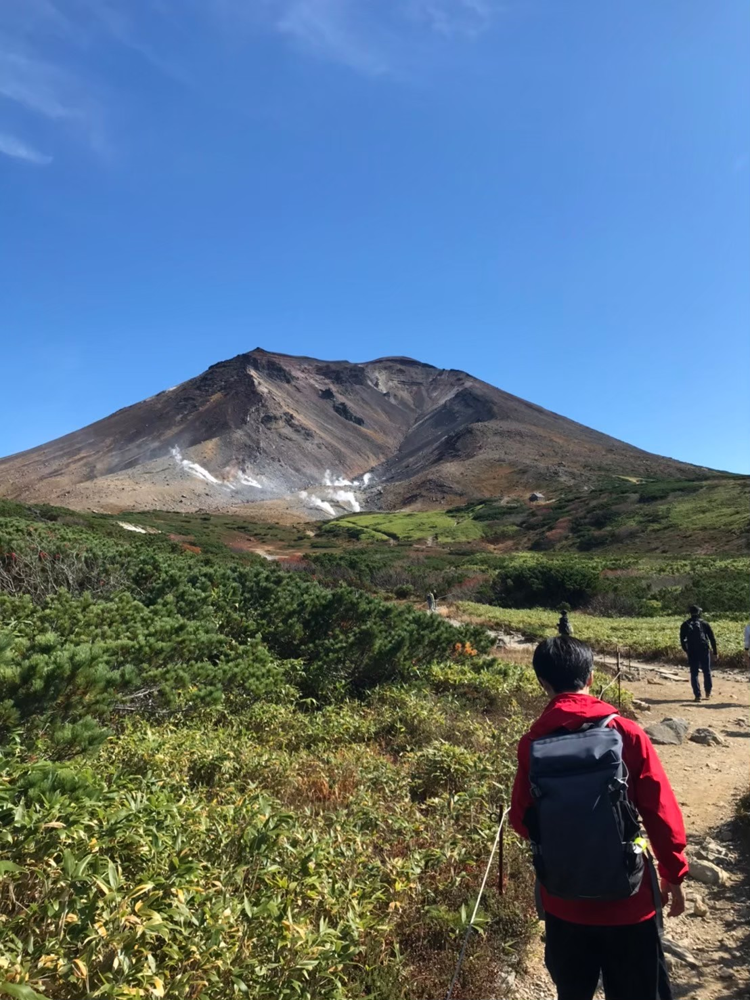

Osuke Taima
當麻 央介
名古屋大学大学院環境学研究科 社会環境学専攻 地理学講座 博士後期課程
日本学術振興会 特別研究員 DC1
リモートセンシングを用いて、日本列島で活動的に変動している地すべりを検出し、 その空間分布と地形的な特徴を明らかにする研究をしています。
研究概要
現在は、活動的に変動している地すべりの空間分布の把握と、その特徴の解明に取り組んでいます。 合成開口レーダ（SAR）、光学衛星画像、LiDAR DEM といった各種リモートセンシング技術を組み合わせ、 地すべりを観測することや、それらに共通する特徴の定量化を目指しています。
News
2026.05.20
今年度より、日本学術振興会 特別研究員（DC1）に採用されました。
2026.03.21
ニュージーランド・クライストチャーチで開催された 11th IAG International Conference on
Geomorphology（2/2–2/6）で口頭発表を行いました。本渡航は名古屋大学大学院環境学研究科
2025年度 環境学研究科学生研究活動支援事業 海外渡航支援の援助を受けました。
2026.03.20
ホームページを公開しました。
Publications
すべて見る2025
高精細DEMを用いたベクトル計算による遷急点抽出 —人の目による判読と比較して—
日本地すべり学会誌 62: 135–143